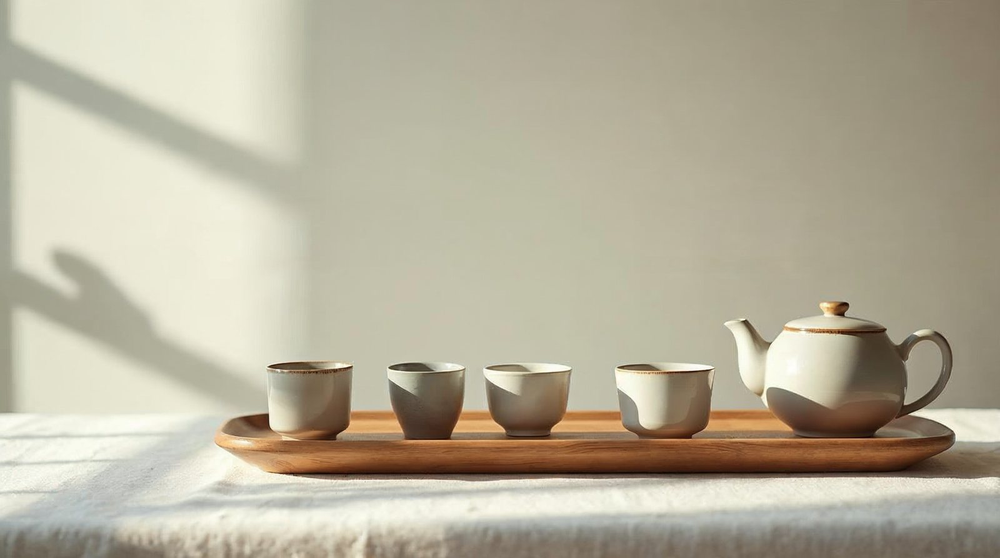
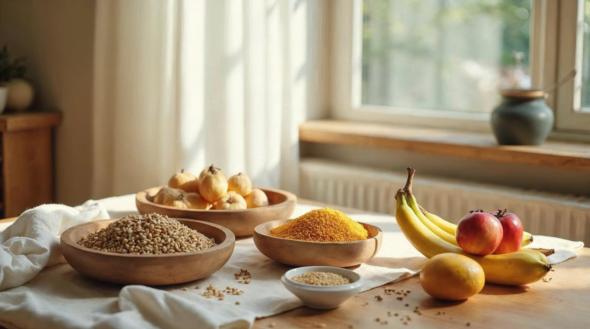
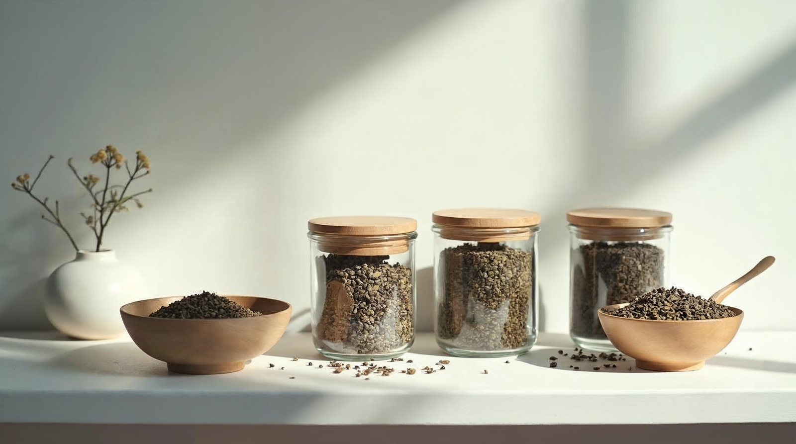
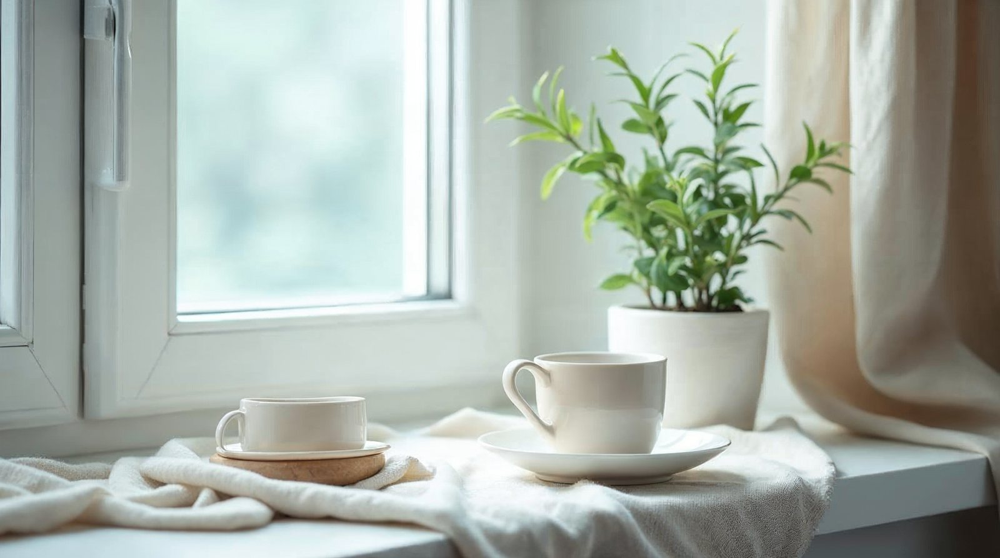
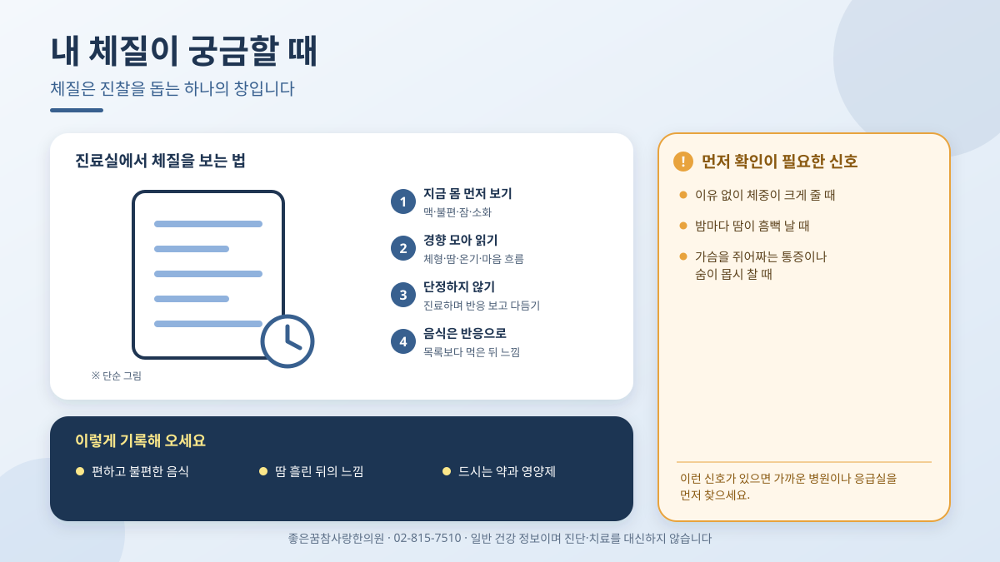

이종호 한의사 감수좋은꿈참사랑한의원 대표원장 (한의사 면허번호 19769)발행 2026-11-26 · 수정 2026-11-27
이 글의 차례
진료를 마치고 일어서시다가 문득 이렇게 묻는 분들이 있어요. "원장님, 그런데 저는 무슨 체질이에요?" 지인은 소음인 같다는데 인터넷 검사에서는 태음인이 나왔다며 어느 쪽이 맞느냐고 하시기도 하고, 체질에 맞지 않는 음식을 지금까지 잘못 먹고 산 건 아닌지 걱정하시기도 하죠.
사상체질은 한국 사람들에게 참 친숙한 말이에요. 식탁에서, 모임에서, 방송에서 자주 오르내리니까요. 그만큼 궁금해하시는 분도 많고, 동시에 오해도 많아요. 체질 하나로 모든 게 정해진다고 여기시는 분도 계시고, 반대로 근거 없는 얘기로만 생각하시는 분도 계세요.
저는 체질을 사람을 이해하는 여러 창 가운데 하나라고 말씀드려요. 같은 감기라도 어떤 분은 땀이 나며 지치고, 어떤 분은 땀 없이 열만 올라요. 같은 스트레스에도 어떤 분은 소화가 막히고, 어떤 분은 잠이 달아나죠. 체질은 이런 차이를 이해하는 데 도움을 주는 틀이에요.
그러니까 사실은 두 개가 다른 얘기예요. '나는 어떤 체질인가'와 '지금 내 몸이 어떤가'는 따로 봐야 하거든요. 체질이라는 틀은 진찰을 대신하지 않아요. 오늘의 맥과 증상, 생활의 흐름이 언제나 먼저이고, 체질은 그 위에서 참고하는 정보예요.
이 글은 체질이 궁금하신 분들께 제가 진료실에서 체질을 어떻게 바라보는지 솔직하게 나누려고 쓴 거예요. 이름 하나를 알려 드리기보다, 내 몸을 읽는 방법을 같이 찾아보자는 마음으로요.

사상체질은 무엇인가요
사상체질은 조선 말기 이제마 선생이 정리한 이론으로, 사람을 태양인, 태음인, 소양인, 소음인의 네 가지 경향으로 나눠 이해합니다. 몸의 장부 기능이 어느 쪽으로 강하고 약한지, 마음이 어떤 상황에서 크게 흔들리는지를 함께 보아 사람마다 다른 모습을 설명하려 한 것입니다.
이 이론의 특징은 병을 먼저 보지 않고 사람을 먼저 본다는 데 있습니다. 같은 병이라도 사람에 따라 다르게 나타나고, 그 사람의 성정과 생활이 몸에 영향을 준다고 보았습니다. 그래서 체질 이야기에는 늘 마음과 생활 습관이 함께 들어 있습니다.
다만 사상체질은 사람을 이해하는 한 가지 관점이고, 현대 의학의 검사처럼 숫자로 딱 떨어지는 기준이 있는 것은 아닙니다. 체질을 나누는 방법과 기준에 대해서는 지금도 연구가 이어지고 있으며, 학계 안에서도 의견이 다양합니다.
네 가지 체질은 대략 어떤 모습인가요
아래는 흔히 이야기되는 경향을 아주 간단히 정리한 것입니다. 실제 사람은 이렇게 깔끔하게 나뉘지 않고, 여러 모습이 섞여 있는 경우가 대부분입니다.
- 태음인: 체격이 크고 든든한 편, 땀을 흘리면 개운해하고 꾸준하지만 움직임이 줄면 몸이 무거워지기 쉬운 경향
- 소음인: 체격이 아담하고 소화가 예민한 편, 꼼꼼하고 차분하지만 찬 음식이나 긴장에 속이 쉽게 불편해지는 경향
- 소양인: 상체가 발달하고 움직임이 빠른 편, 열이 쉽게 오르고 활동적이지만 마음이 급해지기 쉬운 경향
- 태양인: 드물다고 알려져 있으며, 위로 오르는 기운이 강하고 하체가 상대적으로 약하다고 설명되는 경향
이 설명을 읽고 '나는 여기에 딱 맞네' 하실 수도 있고, '두세 가지가 다 섞여 있는데' 하실 수도 있습니다. 둘 다 자연스러운 반응입니다. 성격이나 체형만으로 체질을 정하기는 어렵고, 몸이 실제로 어떻게 반응하는지를 함께 보아야 합니다.
왜 체질 판단이 생각보다 어려울까요
체질은 혈액 검사처럼 한 번에 숫자로 나오는 것이 아닙니다. 체형, 성격, 소화, 땀, 잠, 맥, 평소 잘 생기는 병의 모습 같은 여러 정보를 종합해 경향을 읽는 것이라, 보는 사람의 경험과 해석이 들어갈 수밖에 없습니다.
나이와 생활에 따라 겉모습이 달라지는 것도 어려움을 더합니다. 젊을 때 마르고 예민했던 분이 중년 이후 체중이 늘고 활동이 줄면 겉으로는 다른 체질처럼 보일 수 있습니다. 출산, 큰 병, 긴 스트레스를 겪은 뒤에도 몸의 모습이 크게 바뀝니다.
설문 하나로 체질을 정하는 것도 한계가 있습니다. 설문은 내가 나를 어떻게 보는지에 따라 답이 달라지고, 그날 기분이나 컨디션의 영향도 받습니다. 그래서 설문 결과는 참고 자료로 보시고, 그것만으로 체질을 단정하지는 않으시길 권합니다.
체질과 지금의 병은 어떻게 다를까요
체질은 오래 이어지는 바탕의 경향이고, 지금 겪는 불편은 그 위에 생긴 상태입니다. 예를 들어 평소 소화가 예민한 경향이 있는 분이라도, 지금 겪는 속쓰림이 위염 때문인지, 약 때문인지, 긴장 때문인지는 따로 살펴야 합니다.
그래서 체질을 알게 되었다고 해서 검사가 필요 없어지는 것은 아닙니다. 건강검진, 혈액 검사, 영상 검사처럼 몸 상태를 객관적으로 확인하는 방법은 체질과 상관없이 나이와 증상에 맞춰 받으셔야 합니다. 체질 이야기는 그 결과를 해석하고 생활을 조정하는 데 곁에서 쓰이는 정보입니다.
드시는 약도 마찬가지입니다. 체질에 맞지 않는 것 같다는 이유로 처방받은 약을 혼자 멈추시면 안 됩니다. 약에 관한 고민은 처방한 선생님과 먼저 상의하시고, 그 이야기를 한의원에도 함께 나눠 주세요.
계절과 나이에 따라 달라지는 몸의 모습
같은 분이라도 여름과 겨울에 몸의 모습이 다릅니다. 여름에는 땀을 많이 흘리고 입맛이 떨어지는 분이 있고, 겨울에는 손발이 차고 소화가 느려지는 분이 있습니다. 이런 계절의 흔들림이 어느 쪽으로 크게 나타나는지도 체질 경향을 읽는 데 참고가 됩니다.
나이가 들면 같은 사람도 몸의 무게중심이 달라집니다. 젊을 때는 열이 많다고 느끼던 분이 중년 이후 추위를 더 타기도 하고, 반대로 마르고 예민하던 분이 체중이 늘며 몸이 무거워지기도 합니다. 그래서 체질 이야기는 한 번으로 끝나지 않고, 시기마다 다시 살펴보는 편이 정확합니다.

체질에 따라 음식을 가려야 하나요
체질별 음식 목록을 보고 좋아하는 음식이 '맞지 않는 음식'에 있어 속상해하시는 분이 많습니다. 저는 목록보다 내 몸의 반응을 먼저 보시라고 말씀드립니다. 어떤 음식을 먹고 속이 편한지, 더부룩한지, 잠이 잘 오는지를 지켜보는 것이 훨씬 정확한 안내가 됩니다.
음식 목록을 지나치게 따르다 보면 먹을 수 있는 것이 줄어 영양이 한쪽으로 치우칠 수 있습니다. 특히 성장기 아이, 어르신, 임신 중이신 분은 체질 음식표보다 고른 영양이 먼저입니다. 체질 이야기는 식단을 조이는 규칙이 아니라, 내 몸을 살펴보는 실마리 정도로 생각해 주세요.
다만 같은 음식을 먹고 매번 불편하다면 그 신호는 소중합니다. 찬 음식을 먹으면 늘 설사를 한다거나, 매운 음식을 먹으면 얼굴로 열이 확 오른다거나 하는 경험은 진료실에서 꼭 말씀해 주세요. 체질 경향을 읽는 데도, 지금의 불편을 살피는 데도 도움이 됩니다.
체질과 한약은 어떤 관계인가요
체질은 한약을 정할 때 참고하는 여러 정보 가운데 하나입니다. 하지만 한약은 체질만으로 정하지 않습니다. 지금 어떤 불편이 있는지, 맥과 몸 상태가 어떤지, 드시는 약이 무엇인지, 임신 가능성이 있는지를 함께 보고 신중하게 정합니다.
같은 체질이라도 지금 겪는 불편이 다르면 처방이 달라지고, 다른 체질이라도 지금의 상태가 비슷하면 겹치는 부분이 생길 수 있습니다. 그래서 체질이 같다고 다른 사람의 한약을 나눠 드시는 것은 권하지 않습니다.
드시는 약이 있다면 한약 상담 전에 모두 알려 주세요. 약 봉투나 처방전 사진을 가져와 주시면 가장 정확합니다. 임신 중이시거나 임신 가능성이 있다면 먼저 알려 주시고, 산부인과와 상의하시도록 안내합니다.

체질 이야기를 들을 때 조심할 점
체질은 사람을 이해하는 데 쓰이는 말이지, 사람을 단정하는 꼬리표가 아닙니다. "너는 이 체질이라 성격이 급하다", "저 사람은 저 체질이라 안 맞는다"처럼 사람을 가르는 데 쓰이면 오히려 오해가 쌓입니다. 진료실에서도 체질 이름보다 그분이 지금 어떤 상황에서 힘든지를 먼저 봅니다.
체질을 근거로 특정 상품이나 식품을 권하는 광고도 많습니다. 그런 이야기를 들으셨다면 사기 전에 한 번 여쭤 보세요. 지금 몸에 정말 필요한 것인지, 드시는 약과 겹치지는 않는지 함께 살펴보는 편이 안전합니다.
먼저 이렇게 여쭙니다
체질이 궁금해서 오신 분께도 저는 체질 이야기보다 지금의 몸 이야기를 먼저 여쭙니다.
- 요즘 가장 불편한 것은 무엇인가요?
- 소화는 어떤가요? 찬 음식이나 기름진 음식을 먹으면 어떤가요?
- 땀은 잘 나는 편인가요? 땀을 흘리고 나면 개운한가요, 지치나요?
- 잠은 잘 드시고 깊이 주무시나요?
- 손발과 배는 찬 편인가요, 열이 많은 편인가요?
- 긴장하거나 화가 날 때 몸의 어디가 먼저 불편해지나요?
이 질문들의 답은 체질 경향을 읽는 데도 쓰이지만, 무엇보다 지금 몸을 이해하는 데 직접 쓰입니다. 체질은 이런 이야기들이 모여 조금씩 드러나는 것이라, 처음부터 정답을 찾으려 하지 않으셔도 괜찮습니다.
일상에서 먼저 해 볼 수 있는 것
체질을 알기 전에도 내 몸의 경향을 살피는 일은 지금 바로 시작할 수 있습니다. 아래를 2~3주 지켜보시면 진료실에서 나눌 이야기가 훨씬 풍부해집니다.
- 먹고 나서 속이 편했던 음식과 불편했던 음식 적어 두기
- 땀을 흘린 뒤 몸이 개운한지, 지치는지 살펴보기
- 찬 음료와 따뜻한 음료를 마신 뒤 속의 느낌 비교하기
- 잠이 잘 온 날과 설친 날, 그날 한 일 적어 두기
- 긴장했을 때 먼저 불편해지는 곳 알아차리기
- 계절이 바뀔 때 달라지는 몸의 모습 기억해 두기
이렇게 모은 기록은 체질 이야기보다 더 실용적인 정보가 됩니다. 내 몸이 어떤 조건에서 편안하고 어떤 조건에서 흔들리는지를 알면, 체질 이름을 몰라도 생활을 조금씩 내 몸에 맞게 고쳐 갈 수 있습니다.
한의원에서 함께 살필 수 있는 경우
- 체질이 궁금하고, 지금 몸의 경향을 함께 살펴보고 싶은 경우
- 같은 음식이나 같은 상황에서 반복해서 불편이 생기는 경우
- 소화, 잠, 땀, 몸의 온기가 함께 흔들려 무엇부터 봐야 할지 모르는 경우
- 한약 상담을 앞두고 내 몸의 특징을 미리 이야기하고 싶은 경우
- 인터넷 체질 검사 결과가 헷갈려 정리가 필요한 경우
좋은꿈참사랑한의원에 오시면 모든 분의 맥을 먼저 짚고, 지금의 불편과 생활의 흐름을 함께 여쭙습니다. 체질 경향은 그 정보들을 모아 참고하며, 진찰한 내용을 바탕으로 침, 생활 관리 안내, 한약 상담 가운데 지금 상태에 맞는 것을 고릅니다.
처음 들은 체질 이름이 평생 바뀌지 않는 꼬리표가 되지 않도록, 지금의 몸을 기준으로 함께 이야기를 나누겠습니다.
이렇게 기록해 오시면 상담이 쉬워집니다
체질이 궁금해서 오신다면 아래 내용을 메모해 오시면 도움이 됩니다.
- 평소 잘 생기는 불편(소화, 잠, 두통, 피로 등)
- 먹고 나서 편한 음식과 불편한 음식
- 땀이 나는 모습과 땀을 흘린 뒤의 느낌
- 추위와 더위 가운데 더 힘든 쪽
- 드시는 약과 영양제
- 인터넷이나 다른 곳에서 들은 체질 이야기가 있다면 그 내용
가족 가운데 비슷한 체형이나 비슷한 불편을 가진 분이 있다면 그 이야기도 함께 들려주세요. 가족은 생활 습관을 함께 나누는 경우가 많아, 몸의 경향을 이해하는 데 작은 실마리가 됩니다.
들은 체질 이야기가 있다면 숨기지 말고 말씀해 주세요. 왜 그렇게 들었는지, 지금 몸의 모습과는 어떤지 함께 이야기 나누다 보면 혼란이 줄어듭니다.

체질보다 먼저인 것
체질이 궁금한 마음은 결국 내 몸을 더 잘 알고 싶은 마음이에요. 그 마음은 참 소중하죠. 다만 체질 이름 하나에 몸을 맞추기보다, 지금 몸이 보내는 신호에 귀를 기울이는 쪽이 더 오래 쓸모가 있어요. 이름표는 바뀔 수 있어도, 내 몸이 편했던 기억은 그대로 남거든요.
체질을 살피는 건 제가 할게요. 대신 하나만 부탁드려요. 이번 주에 먹고 나서 속이 편했던 음식과 불편했던 음식을 생각날 때마다 메모해 주세요. 딴 건 지금 드시던 대로 편하게 드셔도 돼요. 체질표를 보고 식탁을 갑자기 바꾸실 필요는 없어요.
다음에 오시면 그 메모와 맥을 함께 보며 내 몸의 경향을 차근차근 얘기 나눠요. 궁금한 건 그냥 아무거나 편하게 물어보세요.
이런 증상은 먼저 확인이 필요합니다
- 이유 없이 몇 달 사이 체중이 크게 줄거나, 밤마다 땀이 흠뻑 나는 경우
- 갑자기 가슴을 쥐어짜는 듯한 통증이 오거나 숨이 몹시 찬 경우
이런 신호가 있으면 한의원보다 가까운 병원이나 응급실을 먼저 찾으세요.
함께 읽으면 좋은 글
- 사상체질은 무엇이고 어떻게 알아보나요?
- 사상체질은 무엇이고 한방 이론으로서 어떤 한계가 있나요?
- 맥진은 어떻게 하고 손목에서 무엇을 살피나요?
- 한의원 문진에서 몸의 따뜻함, 소화, 잠, 대소변, 통증은 왜 함께 묻나요?
- 한약을 먹는 동안 양약과 음식은 어떻게 알려 주면 되나요?

여쭙는 것
- 요즘 가장 불편한 것은 무엇인가요?
- 소화는 어떤가요? 찬 음식이나 기름진 음식을 먹으면 어떤가요?
- 땀은 잘 나는 편인가요? 땀을 흘리고 나면 개운한가요, 지치나요?
생활에서 해 볼 것
- 먹고 나서 속이 편했던 음식과 불편했던 음식 적어 두기
- 땀을 흘린 뒤 몸이 개운한지, 지치는지 살펴보기
- 찬 음료와 따뜻한 음료를 마신 뒤 속의 느낌 비교하기
한의원에서 함께 살필 것
- 체질이 궁금하고, 지금 몸의 경향을 함께 살펴보고 싶은 경우
- 같은 음식이나 같은 상황에서 반복해서 불편이 생기는 경우
- 소화, 잠, 땀, 몸의 온기가 함께 흔들려 무엇부터 봐야 할지 모르는 경우
먼저 확인이 필요한 신호
- 이유 없이 몇 달 사이 체중이 크게 줄거나, 밤마다 땀이 흠뻑 나는 경우
- 갑자기 가슴을 쥐어짜는 듯한 통증이 오거나 숨이 몹시 찬 경우
한눈에 보는 표
| 구분 | 핵심 |
|---|---|
| 여쭙는 것 | 요즘 가장 불편한 것은 무엇인가요? 소화는 어떤가요? 찬 음식이나 기름진 음식을 먹으면 어떤가요? |
| 생활에서 해 볼 것 | 먹고 나서 속이 편했던 음식과 불편했던 음식 적어 두기 땀을 흘린 뒤 몸이 개운한지, 지치는지 살펴보기 |
| 한의원에서 함께 살필 것 | 체질이 궁금하고, 지금 몸의 경향을 함께 살펴보고 싶은 경우 같은 음식이나 같은 상황에서 반복해서 불편이 생기는 경우 |
| 먼저 확인이 필요한 신호 | 이유 없이 몇 달 사이 체중이 크게 줄거나, 밤마다 땀이 흠뻑 나는 경우 갑자기 가슴을 쥐어짜는 듯한 통증이 오거나 숨이 몹시 찬 경우 |
자주 묻는 질문
체질은 한 번 정해지면 평생 바뀌지 않나요?
사상체질 이론에서는 타고난 경향으로 보지만, 실제 진료에서는 나이와 생활, 큰 병을 거치며 겉으로 드러나는 몸의 모습이 크게 달라질 수 있습니다. 그래서 지금의 몸을 기준으로 함께 살펴봅니다.
인터넷 체질 검사 결과를 믿어도 되나요?
설문은 내가 나를 어떻게 보는지와 그날 컨디션에 따라 답이 달라질 수 있어 참고 자료로 보시는 것이 좋습니다. 진료실에서는 맥과 몸의 반응을 함께 보며 경향을 읽습니다.
체질에 안 맞는 음식은 먹으면 안 되나요?
음식 목록보다 내 몸의 반응을 먼저 보시길 권합니다. 먹고 나서 편한지 불편한지를 기록해 보시고, 고른 영양을 해치지 않는 범위에서 조절하시면 됩니다.
가족끼리 체질이 같으면 같은 한약을 먹어도 되나요?
권하지 않습니다. 한약은 체질만으로 정하지 않고 지금의 불편, 맥, 드시는 약을 함께 보고 사람마다 신중하게 정합니다.
좋은꿈참사랑한의원은 재진 때 지난번 이야기부터 이어서 여쭙니다. 진료시간과 예약은 오시는 길에서 확인하세요.
어디서 상담받을 수 있나요?
좋은꿈참사랑한의원은 서울 동작구 만양로2길 2 신성빌딩 3층·5층(서울 동작구 상도동, 7호선 상도역 3번 출구 근처)에 있습니다. 한의사 3명(이종호 대표원장, 조영기 수석진료원장, 정원영 진료원장)이 진료합니다. 진료시간은 평일 09:30~20:00(점심 13:00~14:00), 토·일·공휴일 09:30~15:00이며, 방문 전 전화로 확인을 권합니다. 예약은 네이버 예약, 카카오톡 상담, 전화 02-815-7510로 받습니다.
이 글은 일반적인 건강 정보이며 개인의 진단이나 치료를 대신하지 않습니다. 증상이 있거나 복용 중인 약이 있다면 진료를 통해 확인하세요. 치료 효과는 개인마다 다를 수 있습니다.
작성 기준: 일반적으로 알려져 있는 건강 정보를 참고해 정리했습니다(대표원장 감수). 증상 기록은 1~2주 동안 하루 1회, 비슷한 시간에 적어 오시면 지난 상태와 비교하기 쉽습니다.